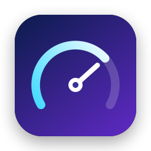
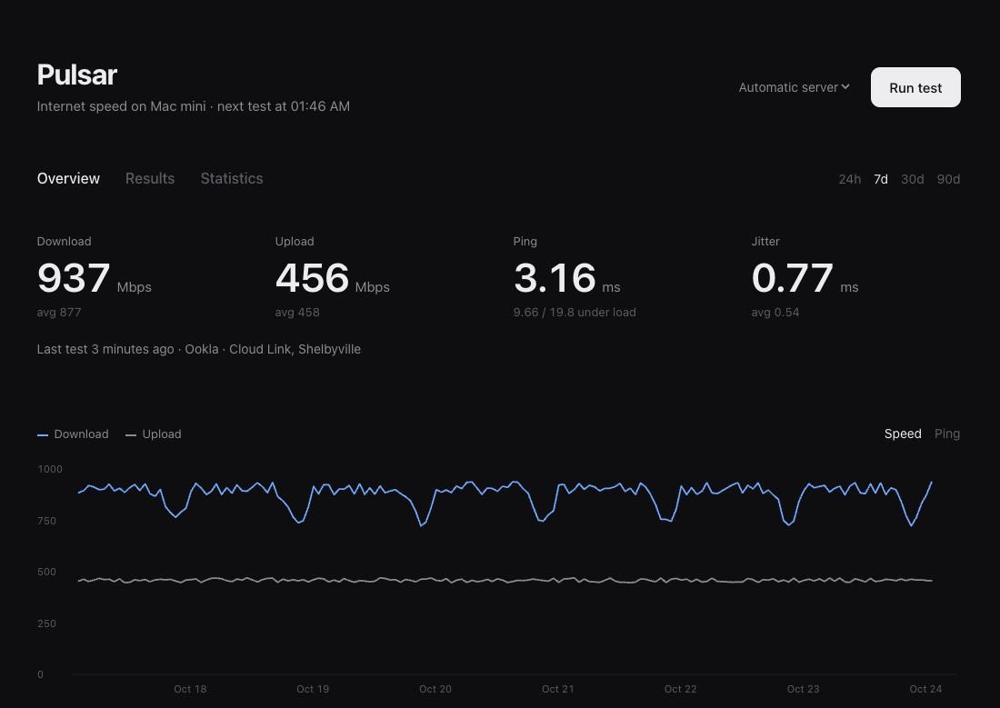
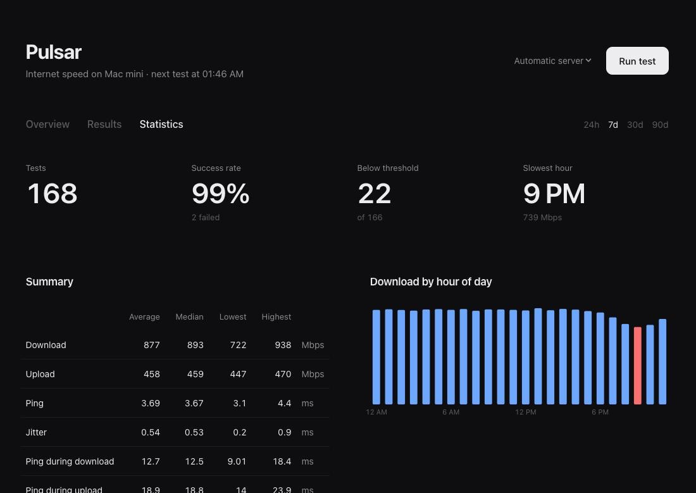

Pulsar
An internet speed monitor that lives in the macOS menu bar. It runs speed tests on a schedule, keeps the history and serves a dashboard to every device on your local network.

Features
Menu bar first
Latest download, upload and ping, a 24-hour chart and a button to test now, one click away.
Scheduled tests
Every 15 minutes to once a day, with a retry five minutes after a failure. The Mac stays awake for them.
Ping under load
Besides idle ping and jitter, Pulsar records ping during the download and upload, which shows how the line copes when it is busy.
LAN dashboard
Overview, full results and statistics at http://pulsar.local, with no account and no cloud.
Alerts
Notification Center, Telegram and ntfy when a test fails or speed drops below a threshold. A webhook gets every result.
Your data
Results stay in a SQLite file on your Mac. Export CSV, read the JSON API or scrape Prometheus metrics.
Install
- Download
Pulsar-<version>.zipfrom the latest release, unzip it and movePulsar.appto Applications. - Pulsar is not notarized by Apple, so macOS blocks the first launch. Open System Settings → Privacy & Security and click Open Anyway, or run once:
xattr -dr com.apple.quarantine /Applications/Pulsar.app - Pulsar appears in the menu bar and runs its first test. It adds itself to login items on the first launch from Applications; Settings → General turns that off.
Pulsar is meant for a Mac that stays on, such as a Mac mini. Tests do not run while the Mac sleeps; see the FAQ.
When a newer release is out, the menu shows a link to it.
Speed test engines
Ookla Speedtest CLI
The same measurement as speedtest.net, against the nearest server or one you pick. It is the default when installed. Ookla's license does not allow bundling the CLI, so install it with Homebrew:
brew install teamookla/speedtest/speedtestOokla asks you to accept its license before the first test. Pulsar shows the license links in Settings → Testing and, once you tick the box, passes --accept-license --accept-gdpr for you. The same tab picks the server scheduled tests use; a test started from the dashboard can use another one.
Apple networkQuality
Built into macOS, nothing to install. It measures against Apple's CDN and reports responsiveness under load in round trips per minute (RPM) instead of ping under load.
Dashboard
Pulsar serves a dashboard to your local network, by default at http://pulsar.local:8765. Settings → Dashboard changes the name and the port; with port 80 the address is just http://pulsar.local. For devices that cannot open .local names, the same tab shows the address by IP.
- Overview — the latest results, a speed or ping chart and the most recent tests.
- Results — every test with ping under load and packet loss, a failures filter and CSV export.
- Statistics — success rate, tests below your alert threshold, average, median and range, download by hour of day and averages per server.

The dashboard has no login, so anyone on your network can open it and start a test. It answers only to localhost, .local names and IP addresses, which keeps web pages elsewhere from reading it through DNS rebinding, and starting a test needs a header other sites cannot send.
Notifications
Settings → Notifications sets when to alert: when a test fails, and when download or upload falls below a threshold (0 turns a threshold off). Alerts always appear in Notification Center on the Mac; each channel below is on once its fields are filled. Send Test Notification checks them all.
Telegram
- Create a bot with @BotFather and copy its token.
- Send the bot any message, then get your chat ID from @userinfobot.
- Paste both into Settings.
ntfy
Enter a topic URL such as https://ntfy.sh/my-pulsar and subscribe to the same topic in the ntfy app. A self-hosted server works too.
Webhook
Pulsar sends a POST with JSON after every test, with an alert when one applies. event is test.completed, test.failed or test.notification; fields without a value are left out.
{
"event": "test.completed",
"alert": { "title": "Slow connection", "body": "Download 412 Mbps, below 800" },
"result": {
"id": 1042,
"date": "2026-10-24T18:00:12Z",
"engine": "ookla",
"downloadMbps": 412.3,
"uploadMbps": 458.1,
"latencyMs": 3.6,
"jitterMs": 0.4,
"downloadLatencyMs": 14.2,
"uploadLatencyMs": 19.8,
"packetLossPercent": 0,
"interfaceName": "en0",
"server": "Example Fiber, Springfield",
"isp": "Example ISP",
"resultURL": "https://www.speedtest.net/result/c/…"
}
}HTTP API
The dashboard server also answers these requests. Dates are ISO 8601 in UTC, speeds in Mbps and times in milliseconds.
| Request | Returns |
|---|---|
GET /api/results?days=7 | Results as JSON, newest first, for 1 to 365 days |
GET /api/results.csv?days=7 | The same as CSV |
GET /api/latest | The last successful result |
GET /api/status | Whether a test is running, when the next one is due, the engine and thresholds |
GET /api/servers | Nearby Ookla servers |
POST /api/run?server=ID | Starts a test, optionally on an Ookla server. Needs the header X-Pulsar-Run: 1; answers 202, or 409 while a test is running |
GET /metrics | Prometheus metrics |
curl -X POST -H 'X-Pulsar-Run: 1' http://pulsar.local:8765/api/runPrometheus
/metrics reports the last successful test and whether the latest one worked:
| Metric | Meaning |
|---|---|
pulsar_download_mbps, pulsar_upload_mbps | Speed |
pulsar_latency_ms, pulsar_jitter_ms | Idle ping and jitter |
pulsar_download_latency_ms, pulsar_upload_latency_ms | Ping under load |
pulsar_packet_loss_percent | Packet loss |
pulsar_responsiveness_rpm | Responsiveness, networkQuality only |
pulsar_last_test_success | 1 if the latest test succeeded, 0 if it failed |
pulsar_last_test_timestamp_seconds, pulsar_last_success_timestamp_seconds | When they finished |
scrape_configs:
- job_name: pulsar
scrape_interval: 5m
static_configs:
- targets: ["192.168.1.20:8765"]FAQ
Does Pulsar test while the Mac sleeps?
No. macOS freezes apps during sleep, so neither tests nor the dashboard run then. Pulsar keeps the Mac from idle-sleeping while it runs (the display still turns off); you can turn that off in Settings → Testing. A Mac mini on Ethernet makes a good always-on monitor.
Wi-Fi or Ethernet?
Over Wi-Fi the result shows the speed in that room as much as the speed of your plan. For the line itself, use Ethernet.
Why are Ookla and networkQuality results different?
They measure against different servers in different ways. Pulsar's averages and statistics use the engine of the latest test so the two are not mixed.
Where is my data?
In ~/Library/Application Support/Pulsar/pulsar.sqlite, kept for a year by default (Settings → Testing). Pulsar sends results nowhere except the channels you set up. Ookla's CLI reports each test to Ookla, as speedtest.net does.
What languages does Pulsar speak?
English and Russian. The app follows the macOS language (System Settings → General → Language & Region → Applications sets it per app); the dashboard follows the browser.
Building from source
Requires Xcode 16 or later.
git clone https://github.com/fosoaq/pulsar.git
cd pulsar
scripts/install.sh # build a Release copy into /Applications
xcodebuild test -project Pulsar.xcodeproj -scheme PulsarPulsar is written in Swift and SwiftUI, stores results with GRDB and serves the dashboard with Hummingbird.